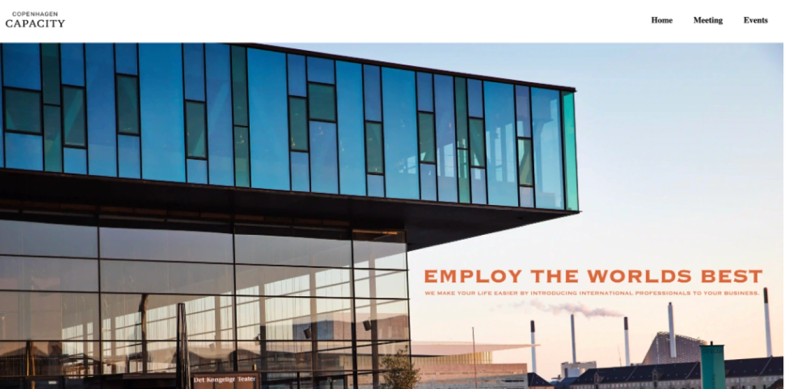
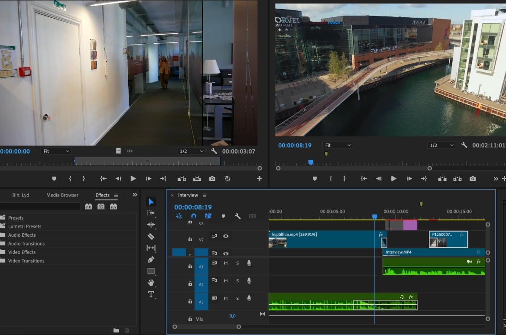
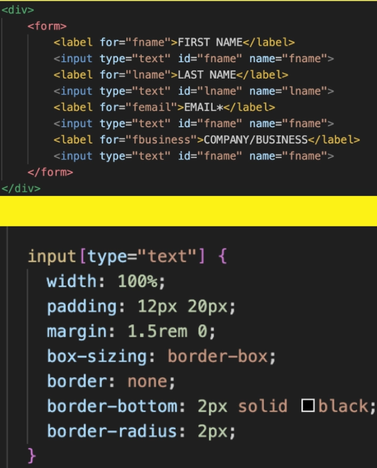
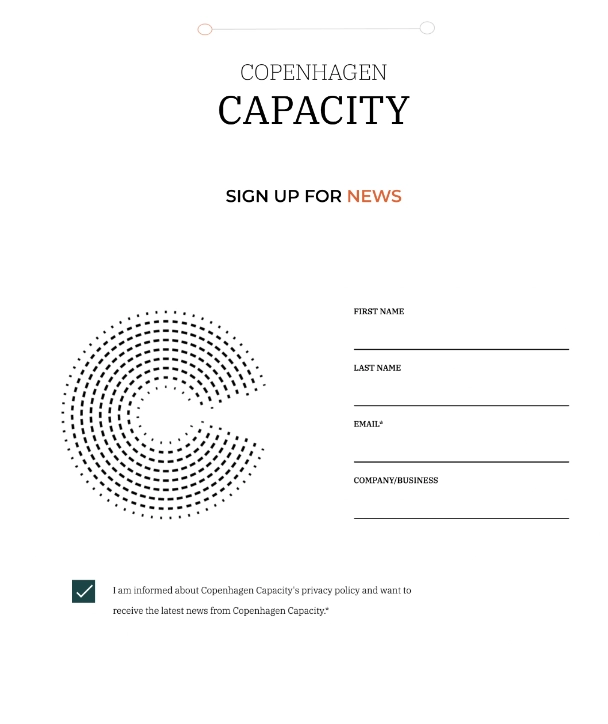

Grundlæggende indhold
Temabeskrivelse
I temaet om grundlæggende indhold lærte vi om grundlæggende principper og metoder til selve indholdsproduktionsdelen i brugergrænseflader, og at kunne anvende teknologier og metoder til både produktion og præsentation. Vi lærte om metode indenfor daily scrum og test som f.eks. BERT og eksperttest der skulle bidrage til ændringer af vores løsninger undervejs.
Passionsite
Jeg valgte at bruge metode omkring transitions og klipning til at løse Passionsiteopgaven samt fulgte de 3 grundprincipper indenfor interviewdelen af sitet og inddragede skuffespørgsmål. Det gjorde jeg fordi det indholdsmæssigt gav det bedste interview, fremfor at falde i en af ‘de 7 dødssynder’. Derudover benyttede jeg mig også af forskellige digitale udviklingsformater såsom wav og mp4 til at udføre opgaven, og anvendte data og metode indenunder indholdsproduktion der indgår i passionsitets endelig resultat.
Virksomhedssite
I opgaven om virksomhedssite havde vi til formål at lave et redesign for virksomheden Copenhagen
Capacity, med fokus på
brugervenlighed og optimering.
Min rolle var at stå for størsedelen af indholdsproduktionen, dvs. lottiefilen på forsiden,
videoklipning og kodning af
formlen, som jeg udførte vha. metode indenfor virksomhedens forretningskoncept, og teknologier for
animeret vektorgrafik
i adobe premiere.
Processen fra klipning --> heroimage er illustreret på billederne. Det sværeste var at sørge for at
have
nok materiale fra
virksomheden, til at det kunne indgå i indholdsproduktionen efterfølgende. Der ville et uddybende
storyboard have
hjulpet, så man havde en klar plan for hvilke klip skulle inkluderes. Min proces i rollen er
illustreret herunder, ift. hvordan jeg har arbejdet med de forskellige elementer.

Adobe premiere
Klipningen foregik i Adobe premiere hvor jeg arbejdede med synkronisering af lyd, Fade ind/ud af lyd, b roll & transitions.
Forms html
På billedet ser man hvordan en formel kan kodes vha. html og css. Det eneste der var nødvendigt for det casen her var at style på borderen, og fjerne border-left/right.
CSS animation & position
Det endelige resultat af formlen, og som man kan se i koden, ved kun at beskrive borderen har en bottom, kommer der kun en underliggende streg og samtidig kan man justere bøjningen af selve formularens border ved at regulere 'radius' op eller ned.